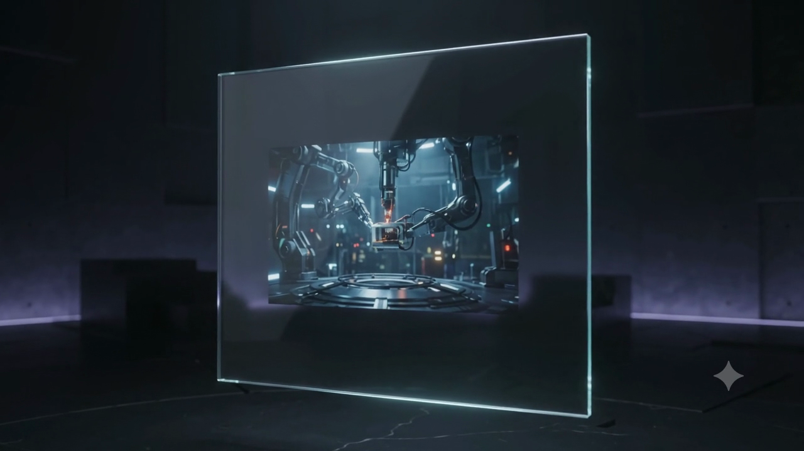
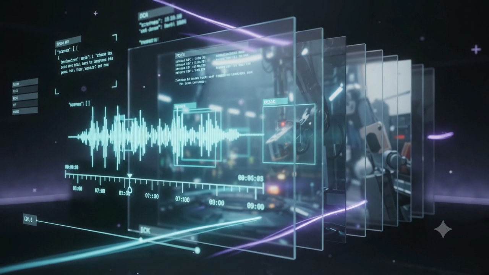
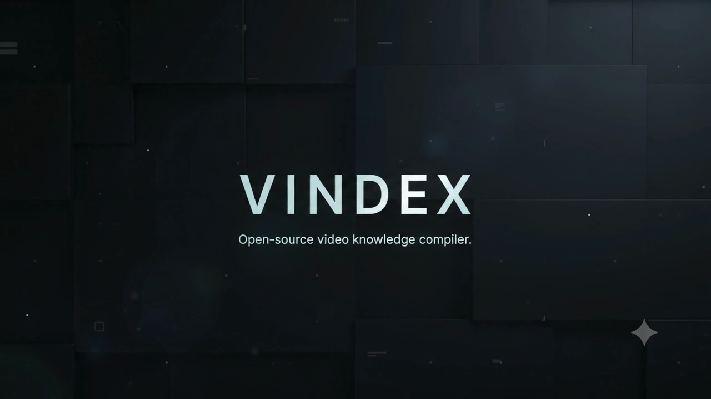

vindex is a local-first video knowledge compiler. It processes video once into deterministic, schema-versioned JSON & Markdown artifacts — giving downstream AI agents and RAG pipelines instant video understanding without burning tokens or streaming raw frames.
Inspect real video compilation on the official demo video: "Stop making AI watch the same video twice." Click any scene or timestamp to jump the video directly to that timecode.

Robotic industrial manipulator arms operating in a dark research laboratory, spotlighting sensory hardware in a glass enclosure.

3D isometric perception pipeline decomposing video into parallel glass timeline layers, waveform telemetry, and schema-validated JSON HUD.

Architectural title brand lockup against textured monolithic dark tile background displaying the official VINDEX mark and descriptor.
Every AI system working with video today re-derives understanding from scratch — non-reproducibly, expensively, every single run.
Modular extractors emit typed Observation streams. The compiler merges them into verified facts.
PySceneDetect identifies shot boundaries; PyAV extracts keyframes via direct libavcodec bindings.
Parallel extractors stream timestamped ASR words, OCR bounding boxes, and visual frame captions.
Aligns observations into Shots and Scenes. Resolves spatial/temporal overlaps and derives named events.
Outputs validated Pydantic v2 JSON and strictly grounded Markdown narration for downstream agents.
Inspect real, schema-validated artifacts generated from the demo video. Click a tab to view the output file.
{
"schema_version": "2.0",
"video_hash": "93738e5ac619146593940e2bd31060ce518c98df14f98556e42ea43114af515a",
"generated_at": "2026-11-08T13:45:00Z",
"metadata": {
"resolution": "1280×720",
"framerate": "24 fps",
"duration": "10.03s"
},
"timeline": {
"schema_version": "2.0",
"total_duration_ms": 10026,
"scenes": [
{
"scene_id": "sc001",
"start_ms": 0,
"end_ms": 3200,
"dominant_caption": "Robotic industrial manipulator arms operating in a dark research laboratory, spotlighting sensory hardware in a glass enclosure.",
"shots": [
{
"shot_id": "sh001",
"start_ms": 0,
"end_ms": 3200,
"frames": [{ "timestamp_ms": 1500, "frame_path": "frames/sh001_1500.png" }],
"asr_words": [
{ "word": "Stop", "start_ms": 0, "end_ms": 520, "confidence": 0.82 },
{ "word": "making", "start_ms": 520, "end_ms": 880, "confidence": 1.0 },
{ "word": "AI", "start_ms": 880, "end_ms": 1260, "confidence": 0.94 },
{ "word": "watch", "start_ms": 1260, "end_ms": 1600, "confidence": 1.0 },
{ "word": "the", "start_ms": 1600, "end_ms": 1800, "confidence": 1.0 },
{ "word": "same", "start_ms": 1800, "end_ms": 2040, "confidence": 1.0 },
{ "word": "video", "start_ms": 2040, "end_ms": 2380, "confidence": 1.0 },
{ "word": "twice.", "start_ms": 2380, "end_ms": 2960, "confidence": 1.0 }
],
"ocr": [
{ "text": "LAB STAGE 01", "timestamp_ms": 1500, "bbox": [110, 80, 240, 110], "confidence": 0.94 }
]
}
]
},
{
"scene_id": "sc002",
"start_ms": 3200,
"end_ms": 7500,
"dominant_caption": "3D isometric perception pipeline decomposing video into parallel glass timeline layers, waveform telemetry, and schema-validated JSON HUD.",
"shots": [
{
"shot_id": "sh002",
"start_ms": 3200,
"end_ms": 7500,
"frames": [{ "timestamp_ms": 5000, "frame_path": "frames/sh002_5000.png" }],
"asr_words": [
{ "word": "Vindex", "start_ms": 3840, "end_ms": 4180, "confidence": 0.97 },
{ "word": "compiles", "start_ms": 4180, "end_ms": 4740, "confidence": 0.99 },
{ "word": "it", "start_ms": 4740, "end_ms": 5060, "confidence": 1.0 },
{ "word": "into", "start_ms": 5060, "end_ms": 5640, "confidence": 0.99 },
{ "word": "reusable", "start_ms": 5640, "end_ms": 6220, "confidence": 0.76 },
{ "word": "knowledge.", "start_ms": 6220, "end_ms": 6740, "confidence": 1.0 }
],
"ocr": [
{ "text": "\"scenes\": [...]", "timestamp_ms": 4200, "bbox": [142, 128, 260, 220], "confidence": 0.98 },
{ "text": "\"ocr\"", "timestamp_ms": 4800, "bbox": [285, 45, 380, 85], "confidence": 0.96 }
]
}
]
}
],
"events": [
{ "event_id": "ev001", "event_type": "SceneBoundary", "start_ms": 0, "end_ms": 0, "source_shot_ids": ["sh001"] },
{ "event_id": "ev002", "event_type": "SpeakerChange", "start_ms": 3840, "end_ms": 3840, "source_shot_ids": ["sh002"] },
{ "event_id": "ev003", "event_type": "SlideTransition", "start_ms": 7500, "end_ms": 7500, "source_shot_ids": ["sh003"] }
]
}
}# Visual Memory Index
**Generated at:** 2026-11-08T13:45:00Z
**Video Hash:** 93738e5ac619146593940e2bd31060ce518c98df14f98556e42ea43114af515a
**Narration Model:** qwen2-vl-2b-instruct (version: 1.0)
> [!NOTE]
> The narration text below is non-deterministic LLM output strictly grounded in the compiled video index.
---
## Chronological Scenes
### Scene 1: sc001 (00:00.000 – 00:03.200)
- **Visual Description:** Robotic industrial manipulator arms operating in a dark modern research laboratory, spotlighting an illuminated sensory device inside a glass enclosure.
- **On-Screen Text (OCR):** "LAB STAGE 01" detected at 00:01.500 (bounding box: [110, 80, 240, 110]).
- **Spoken Audio (ASR):** "Stop making AI watch the same video twice." (00:00.000 – 00:02.960).
- **Key Events:** Scene boundary initialized at timestamp 0 ms across shot sh001.
### Scene 2: sc002 (00:03.200 – 00:07.500)
- **Visual Description:** 3D isometric perception pipeline decomposing video into parallel glass timeline layers, real-time audio waveform telemetry, and schema-validated JSON bounding overlays.
- **On-Screen Text (OCR):**
- `"scenes": [...]` detected at 00:04.200 (bounding box: [142, 128, 260, 220])
- `"ocr"` detected at 00:04.800 (bounding box: [285, 45, 380, 85])
- `00:00:00` and `00:04:05` waveform telemetry markers detected at 00:05.200
- **Spoken Audio (ASR):** "Vindex compiles it into reusable knowledge." (00:03.840 – 00:06.740).
- **Key Events:** Speaker emphasis shift at 00:03.840; scene boundary established across shot sh002.
### Scene 3: sc003 (00:07.500 – 00:10.026)
- **Visual Description:** Architectural monolithic title sequence against dark textured panelling displaying the VINDEX brand lockup and core descriptor.
- **On-Screen Text (OCR):** "VINDEX" (00:08.000) and "Open-source video knowledge compiler." (00:08.500).{
"schema_version": "2.0",
"total_duration_ms": 10026,
"scenes": [
{ "scene_id": "sc001", "start_ms": 0, "end_ms": 3200, "dominant_caption": "Robotic manipulator arms..." },
{ "scene_id": "sc002", "start_ms": 3200, "end_ms": 7500, "dominant_caption": "3D isometric perception pipeline..." },
{ "scene_id": "sc003", "start_ms": 7500, "end_ms": 10026, "dominant_caption": "Architectural monolithic title sequence..." }
],
"events": [
{ "event_id": "ev001", "event_type": "SceneBoundary", "start_ms": 0, "end_ms": 0 },
{ "event_id": "ev002", "event_type": "SpeakerChange", "start_ms": 3840, "end_ms": 3840 },
{ "event_id": "ev003", "event_type": "SlideTransition", "start_ms": 7500, "end_ms": 7500 }
]
}{
"schema_version": "1.0",
"extractor": "asr.faster_whisper",
"language": "en",
"words": [
{ "word": "Stop", "start_ms": 0, "end_ms": 520, "confidence": 0.82 },
{ "word": "making", "start_ms": 520, "end_ms": 880, "confidence": 1.0 },
{ "word": "AI", "start_ms": 880, "end_ms": 1260, "confidence": 0.94 },
{ "word": "watch", "start_ms": 1260, "end_ms": 1600, "confidence": 1.0 },
{ "word": "the", "start_ms": 1600, "end_ms": 1800, "confidence": 1.0 },
{ "word": "same", "start_ms": 1800, "end_ms": 2040, "confidence": 1.0 },
{ "word": "video", "start_ms": 2040, "end_ms": 2380, "confidence": 1.0 },
{ "word": "twice.", "start_ms": 2380, "end_ms": 2960, "confidence": 1.0 },
{ "word": "Vindex", "start_ms": 3840, "end_ms": 4180, "confidence": 0.97 },
{ "word": "compiles", "start_ms": 4180, "end_ms": 4740, "confidence": 0.99 },
{ "word": "it", "start_ms": 4740, "end_ms": 5060, "confidence": 1.0 },
{ "word": "into", "start_ms": 5060, "end_ms": 5640, "confidence": 0.99 },
{ "word": "reusable", "start_ms": 5640, "end_ms": 6220, "confidence": 0.76 },
{ "word": "knowledge.", "start_ms": 6220, "end_ms": 6740, "confidence": 1.0 }
]
}{
"schema_version": "1.0",
"extractor": "ocr.paddleocr",
"detections": [
{ "text": "LAB STAGE 01", "timestamp_ms": 1500, "bbox": [110, 80, 240, 110], "confidence": 0.94 },
{ "text": "\"scenes\": [...]", "timestamp_ms": 4200, "bbox": [142, 128, 260, 220], "confidence": 0.98 },
{ "text": "\"ocr\"", "timestamp_ms": 4800, "bbox": [285, 45, 380, 85], "confidence": 0.96 },
{ "text": "00:00:00", "timestamp_ms": 5200, "bbox": [132, 595, 205, 620], "confidence": 0.99 },
{ "text": "00:04:05", "timestamp_ms": 5200, "bbox": [485, 630, 560, 655], "confidence": 0.99 },
{ "text": "VINDEX", "timestamp_ms": 8000, "bbox": [330, 420, 670, 540], "confidence": 0.99 },
{ "text": "Open-source video knowledge compiler.", "timestamp_ms": 8500, "bbox": [332, 580, 668, 620], "confidence": 0.99 }
]
}Integrate vindex however your architecture requires: typed Python SDK, fast CLI, async REST API, or custom plugins.
from vindex import compile_video
# Compiles video once; returns a typed VisualMemory model
memory = compile_video("lecture.mp4", output_dir="./dist")
# Query deterministic scenes, shots, and events
for scene in memory.timeline.scenes:
print(f"Scene {scene.scene_id}: {scene.dominant_caption} [{scene.start_ms}ms - {scene.end_ms}ms]")
for shot in scene.shots:
print(f" Shot {shot.shot_id}: {len(shot.ocr)} OCR text elements, {len(shot.asr_words)} spoken words")# Compile full video to structured JSON and Markdown
$ vindex compile lecture.mp4 -o ./dist
# Run isolated stages or pass external whisper transcript
$ vindex compile lecture.mp4 --stages scene,ocr -t pre_whisper.json
# Inspect compiled JSON artifacts with terminal formatting
$ vindex inspect ./dist/visual_memory.json
# Validate schema integrity against Pydantic v2 schemas
$ vindex validate ./dist/visual_memory.json -t VisualMemory
# Run golden fixture evaluation harness (accuracy benchmarks)
$ vindex eval eval/golden/fixture_001 ./dist# Start the local FastAPI server and Web Studio UI
$ uv run uvicorn vindex.api.app:app --host 127.0.0.1 --port 8000
# Submit video for async background compilation
$ curl -X POST http://localhost:8000/api/compile -F "video=@lecture.mp4"
{"job_id": "c9a4b2e8-5f11-4b2a", "status": "processing"}
# Poll job status & fetch compiled JSON or Markdown
$ curl http://localhost:8000/api/jobs/c9a4b2e8-5f11-4b2a/result
$ curl http://localhost:8000/api/jobs/c9a4b2e8-5f11-4b2a/narration# In your pyproject.toml:
[project.entry-points."vindex.extractors"]
custom_asr = "my_package.asr:CloudOrLocalASRExtractor"
[project.entry-points."vindex.runtimes"]
llamacpp_vlm = "my_package.vlm:LlamaCppVLMRuntime"
# Dynamic discovery in core code:
from vindex.core.plugins import get_extractor_plugins
extractors = get_extractor_plugins() # Zero modifications to core vindexNo network calls. No API keys. No video leaving your device. Whisper, PaddleOCR, and Qwen run entirely on local silicon.
Same video + same config = byte-identical JSON facts, every single time. Caches are content-addressed by hash.
Every artifact is validated against Pydantic v2 schemas and carries an explicit schema_version.
The LLM narration layer phrases facts already compiled in JSON. It is strictly forbidden from hallucinating.
Every extractor sits behind an abstract interface. Swap or extend components without forking the codebase.
Built-in evaluation harness (vindex eval) scores compiled outputs against ground-truth fixtures.